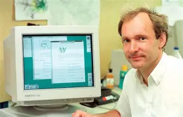

Ada Lovelace
Es cierto que en las carreras de tecnología históricamente han habido más hombres que mujeres, ¡Pero esto no significa que sea una carrera de hombres! ¿No me crees? Pues permíteme comentarte que el primer ser humano programador de la historia fue una mujer.
El primer programa
Ada Lovelace tradujo del francés al inglés el manual de la famosa máquina analítica de Charles Babbage, y agregó unas notas en las que planteaba la idea de una máquina universal programable (en un tiempo que no existían los lenguajes de programación).
Grace Hopper
Pero Ada Lovelace no fue la única, porque un siglo después de su muerte, es creado el primer compilador (es decir, un programa que traduce lenguaje de programación, a lenguaje de máquina o binario) y lo hizo también una mujer.
Creó el primer manual de programación
Remontémonos a los años 40, cuando el mundo de la programación apenas comenzaba. Si, la época en la que las computadoras no cabían en la palma de tu mano como ahora, sino que se encontraban en universidades, y eran extensas maquinarias con varias toneladas de peso. En esa época, las computadoras eran electromecánicas y para poder programarlas en lenguaje binario o ensamblador, se utilizaban cables e interruptores.
Dennis Ritchie
Si Ada Lovelace escribió el primer programa, y Grace Hopper escribió el primer compilador, el siguiente programador diseñó el primer sistema operativo de la historia.
Dennis Ritchie decía que él no era lo suficientemente inteligente para ser físico o matemático (sí lo era), pero le gustaba la programación. Por eso en 1967 abandonó su postgrado de Matemáticas Aplicadas en Harvard para entrar en los legendarios Laboratorios Bell
Al poco tiempo de entrar a los Bell Labs en la década de los 60, en esos tiempos cuando aún las computadoras no tenían un sistema operativo interoperable (no se podía trasladar la arquitectura entre varias computadoras, ni pasar los mismos programas), le asignaron trabajar junto a Ken Thompson en el desarrollo del Sistema Operativo MULTICS, pero este S.O. les resultó demasiado complicado, y muy pesado.
Más tarde encontrarían una computadora PDP-7 en la que comenzaron a construir un S.O. multiplataforma desde cero. Así nació UNIX (Uniplexed Information and Computing System).
UNIX, un sistema operativo multipropósito e interoperable, significó un cambio de paradigma y una revolución tecnológica que hizo más eficiente el desarrollo de software.
Bill Gates
La mayoría recuerda a Bill Gates como un empresario multimillonario, pero muchos ignoran qué fue lo que llevó hasta ese lugar: Cuando era apenas un muchacho podía pasarse de 14 a 16 horas programando sin parar. Tanto así que se "desmayaba" del sueño frente al teclado y continuaba en la misma línea de código donde se había quedado, ¡Y cuando no podía programar en una computadora, lo hacía en papel! Y es que desde niño Bill Gates fue afortunado: fue llevado a una escuela donde había una terminal de tiempo compartido (una computadora que se conecta a una gran computadora central a través de red, y puedes usar tiempo de esa computadora para practicar); a partir de esa experiencia, Bill Gates se volvió completamente aficionado a la programación.
Tim Berners-Lee
En el año 1984, Berners-Lee estaba frustrado mientras trabajaba como investigador en el CERN (Organización Europea para la Investigación Nuclear), porque los métodos para compartir información eran demasiado engorrosos: Había que intercambiar correos electrónicos, o aún peor, iniciar y cerrar sesión en diferentes ordenadores para acceder a la información. 💡 Aquí fue cuando a él se le ocurrió la idea de que los documentos se conectasen unos con otros. A esa conexión le llamó hipervínculo o hipertexto, el famoso “link”, la base de toda la web. Pero faltaba algo, un elemento necesario para crear documentos que contuvieran enlaces. Así creó un lenguaje de marcado, al que llamó HTML (HyperText Markup Language). Hoy, HTML es el lenguaje con el que se construye toda la web.
